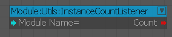
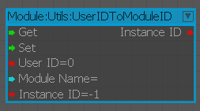

Утилиты
InstanceCounterListner
Выводит в режиме реального времени количество запущенных экземпляров данного модуля.

UserIDToModuleID
Используется для сопоставления пользователя ID с экземпляром модуля ID.

Входы
| Порт | Тип | Описание |
|---|---|---|
| Получить | Любой | Получает экземпляр модуля ID для пользователя ID. |
| Установить | Любой | Получает экземпляр модуля ID для пользователя ID. |
| UserID | Целое число | Пользователь ID |
| Имя модуля | Целое число | Название модуля. |
| Экземпляр ID | Целое число | экземпляр ID |
Выходы
| Порт | Тип | Описание |
|---|---|---|
| Экземпляр ID | Целое число | Экземпляр ID для пользователя ID |